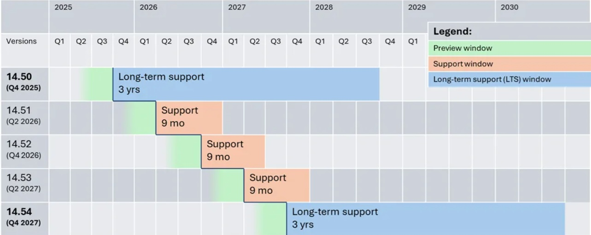

こんにちは、Japan Developer Support Core チームの上原です。
今回は C++ Team Blog の記事 New release cadence and support lifecycle for Microsoft C++ Build Tools で発表された、MSVC ビルドツールのリリースとサポートライフサイクル に関する更新点を、一部加筆、修正の上、日本語で説明します。
はじめに
Visual Studio が毎月の機能更新と年次のメジャーバージョンを導入するモダンライフサイクルに移行する中で、コンパイラを IDE (Visual Studio) から切り離すことで、IDE の迅速な更新と、ビルドツールの安定性を両立することが可能となりました。このアプローチは、IDE とビルドツールの両方で最新の C++ の進歩を活用しつつ、安全で標準に準拠したビルド環境を維持し、エンタープライズでも利用可能な動作保証と柔軟なアップグレードを、それぞれのプロジェクトのニーズに合わせて実施可能となります。
この記事では、主な変更点、変わらない点、そして移行をどのように支援するかを概説します。
MSVC リリースおよびサポート ライフサイクルの変更の概要
Visual Studio 2026 バージョン 18.0 は 2025年 11月 11日にリリースされ、リリース時点の MSVC バージョンは 14.50 です。この MSVC バージョンは長期サポート リリース（LTS）となります。
何が変わるのか？
MSVC 14.50 から、MSVC のライフサイクルは Visual Studio から分離され、モダン ライフサイクル ポリシー を採用します。
- これらの変更は Microsoft C++ ビルドツールが対象であり、Windows C++ のコンパイラ ツール（例:
cl.exe、link.exe）、C および C++ ライブラリ（STL、ATL/MFC、OpenMP など）、VC Runtime の再頒布可能ファイルを含みます。 - これらのコンポーネントは通常、
[VS Folder]\VC\Tools\MSVC\14.NN.NNNNN\配下にインストールされます。
- これらの変更は Microsoft C++ ビルドツールが対象であり、Windows C++ のコンパイラ ツール（例:
リリース時期: MSVC は Stable チャンネルでリリースされる Visual Studio の月次アップデートの一環として、6か月ごと（5月と 11月）に新しいバージョンがリリースされ、サポート期間は 9か月です。
長期サポート(LTS): 2年ごとの 11月のリリースを MSVC LTS（Long Term Support）として指定し、LTS はバグ修正、セキュリティ更新、互換性改善を含む 3 年間のサポートが提供されます。
入手方法: MSVC プレビューを含むすべてのリリースは Visual Studio の Stable Channel および Insiders Channel で利用可能で、ユーザーはオプトインで利用可能です。
以下の図は、今後数年間の MSVC リリーススケジュールがどのようなものになるかを示しています。なお、本図は 2025年 11月時点での計画を示しており、実際のリリーススケジュールは変更される可能性があります。

何が変わらないのか？
- Visual Studio での MSVC のインストール方法: Visual Studio は、Visual Studio IDE のインストール または Visual Studio Build Tools インストール を通じて、従来どおり MSVC をインストールして利用できます。
- 複数の MSVC バージョンの利用: Visual Studio では複数の MSVC バージョンが提供されており、すでにサポートが終了したバージョンも含めて、プロジェクトに必要なビルドツールのバージョンを選択し、IDE(Visual Studio 本体) のバージョンアップとは独立して管理できます。
- C++ バイナリ互換性: MSVC 14.50 は、従来の MSVC 14.x と同様に、Visual Studio 2015 以降の MSVC バージョンとバイナリ互換が維持されます。そのため、開発チームが実行環境の C++ バージョンに直接依存せずに、開発に利用する MSVC バージョンを決定でき、多くの場合、上位バージョンへの移行も容易です。
- C++ 再頒布可能パッケージ（VCRedist）は、付属する MSVC Build Tools のライフサイクルに従い、バイナリ互換性が維持されたインプレイス アップグレード製品として、従来どおりサポートされます。つまり、新しいバージョンの VCRedist は古いバージョンと互換性が維持されており、古いバージョンで構築された既存のアプリケーションも、新しいバージョンのランタイム上で従来どおり動作することが期待されます。
- 過去バージョンの MSVC リリースのサポート: Visual Studio 2022 以前に出荷された MSVC バージョンは、最初に出荷された Visual Studio のライフサイクルに応じて引き続きサポートされます。新しいモダン サポート ライフサイクルは、MSVC バージョン 14.50 以降に適用されます。
- 他の Visual Studio コンポーネントへの影響: Visual Studio にインストールされる他のコンポーネント（例: 他のツールセット、ライブラリ、SDK、フレームワーク）は、今回の MSVC に関する変更の影響を受けません。
変革の推進力
従来の MSVC は Visual Studio のサポートポリシーとリリーススケジュールに沿ってサポートされていました。 Visual Studio 2026 以降では、MSVC のライフサイクルは安定性、コンプライアンス、モダニゼーションを優先し、お客様のニーズにより良く応えます。この変化により、より安定した長期サポートを提供し、開発チームが変化に対応できるよう支援し、新しいツールによるアップグレードを簡素化しつつ、断片化を減らし、安全で最新の C++ を活用いただけます。
- Visual Studio 2026 以降のリリース頻度: Visual Studio は四半期ごとではなく月次リリースとなり、新しい生産性機能や AI ワークフローをより容易に導入できるようになりました。IDE の進化が速くなるにつれて、ほとんどの顧客は IDE と同じような速いペースで MSVC リリースに追従することは困難であることを認識しています。この安定性重視の姿勢を反映するため、 MSVC ビルドツールは IDE と分離され、かつ頻度の低いリリーススケジュールを採用します。また、MSVC の新バージョンにより速やかに移行したい方には、Visual Studio の Insiders Channel および Stable Channel で利用可能な、MSVC プレビューリリースもご利用いただけます。
- .NET の長期サポートとの連携: .NET はすでに最新のライフサイクルポリシーに従っています。.NET 10 は 2025年 11月にリリースされ、これは、長期に .NET を利用する顧客向けの LTS リリースでもあります。シンプルさと利便性のために、MSVC ビルドツールの LTS スケジュールを .NET LTS スケジュールに合わせ、11月リリース(MSVC 14.50)を LTS リリースとして指定しています。
- 最新かつ基準や規制への準拠: CyberEO(米国)や CRA(EU)などの規制は、ソフトウェアサプライチェーンのセキュリティを確保するための最新のツールを求めています。NIST や CISA などの基準を満たすことが求められており、時代遅れのコンパイラに依存することはもはや受け入れられません。これらの標準は新たなセキュリティ課題に対応するために絶えず進化しており、コンプライアンスを維持するために定期的なツール更新が不可欠です。最新のツールへのアップデートは、現在の脅威に対処するためのより安全で最新のコーディング手法へのアクセスも可能にします。
- 断片化を減らして価値を高める: 10年前のコンパイラのサポートはますます複雑になっています。MSVC のバージョン数を限定することで、期待されるサービスやセキュリティの品質を維持しつつ、C++ 標準の適合性、コード安全性、パフォーマンスの向上により多くの投資を行えます。
これらの理由を踏まえ、私たちの目標は MSVC のライフサイクルを近代化し、機敏性と革新を促進しつつ、企業のニーズに最良のサポートを提供することです。
アップグレードをお手伝いします
開発環境を最新かつ安全に保つために、MSVC のリリース時期に合わせた定期的なツールセットアップグレードを推奨します。アップグレードには課題やコストが伴うことを理解しており、特に頻繁なアップデートを優先してこなかったチームにとってはなおさらです。皆様からのフィードバックをもとに、最新バージョンへの移行をより簡単で速く、予測可能にするためのツールやワークフローの改善に投資しています。
- ツールセットのアップグレード ワークフローの改善: Visual Studio 2026 は、MSVC などのツールセットのアップグレードを改善し、「セットアップアシスタント」 という、より柔軟なアップグレード機能 を導入します。
- サポート期間(サポート ウィンドウ) の重複により、新規リリースごとにアップグレードする場合でも、LTS を使い続ける場合でも、移行が容易になります。LTS バージョンは 1年間、通常リリースは 3ヶ月の重複期間があり、サポートを維持しながらアップグレードを検討する時間が確保されます。
- MSVC 14.50 以降での C++ バイナリ互換性: MSVC 14.50 以降では、バイナリ互換性が保証されている ことを最大限に活用し、段階的にソリューションをアップグレードすることも可能です。すべてのプロジェクトや外部依存関係を、一度に再構築する必要はありません。また、サードパーティーのオープンソース ソフトウェアに対する依存関係については、vcpkg パッケージマネージャー を活用することで、最新のツールセットに対して依存関係を再構築することも可能になりました。
- C++ 向け GitHub Copilot アプリのモダナイゼーション: Visual Studio では、新しい AI 支援によるツールセットアップグレード機能を、まずはプライベートプレビューとしてリリースされました。この新機能は、例えばプロジェクト設定の調整、新たな推奨警告やセキュリティフラグの有効化、さらにはコンパイラの厳格な準拠によって生じるエラーのクラスを除去するためにソースコードを変更することが可能です。ご興味があれば、今日から C++ 向け GitHub Copilot アプリのモダン化のプライベートプレビューに登録できます。
未来を見据えて
いつも C++ や MSVC をご利用くださりありがとうございます。新しい MSVC のリリース時期やサポート ライフサイクルの変更が、どのような影響を与えるかについてご質問がある場合は、vcupgrade@microsoft.com までお問い合わせください。
Visual Studio 2026 と並行して最新の MSVC リリースが提供され、大幅なパフォーマンス向上、標準適合性の向上、セキュリティ機能の強化が案内されています。MSVC Build Tools バージョン 14.50 にアップグレードして改善点を試し、Visual Studio の「ヘルプ > フィードバックの送信」から提案を共有してください。
本ブログの内容は弊社の公式見解として保証されるものではなく、開発・運用時の参考情報としてご活用いただくことを目的としています。もし公式な見解が必要な場合は、弊社ドキュメント (https://learn.microsoft.com や https://support.microsoft.com) をご参照いただくか、もしくは私共サポートまでお問い合わせください。